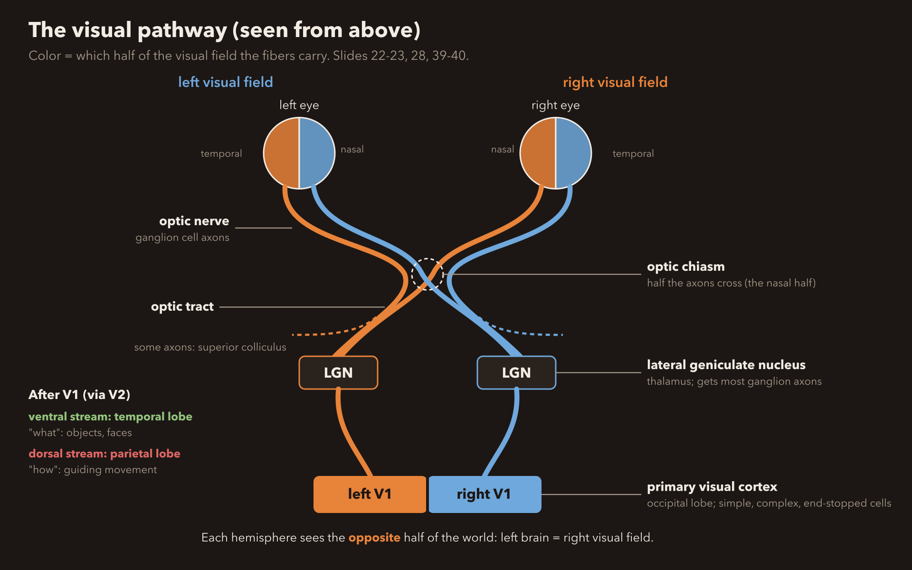

Chapter 5, Vision: study guide
This is a demo of a One-shot package. Explanations and questions are written fresh from the material, not copied from it.
Pre-test: 5 questions, before you read
- Which cells' axons form the optic nerve?Ganglion cells.
- Rods or cones: which handle dim light?Rods, mostly in the periphery.
- What does the opponent-process theory explain that the trichromatic theory does not?Negative afterimages (red vs green, yellow vs blue).
- Where do half the fibers from each eye cross?The optic chiasm.
- Damage to which stream leaves you able to see an object but not name it?The ventral (temporal, "what") stream: visual agnosia.
Seeing happens in the brain low yield
Your eyes don't actually see anything. They're more like a doorbell camera that sends a signal inside. The brain decides what the signal means. The rule for that is the law of specific nerve energies: each nerve always carries the same kind of message. A nerve from your eye always says "light", no matter what pokes it. That's why rubbing your closed eyes makes you "see" sparkles.
| If the question says | Answer |
|---|---|
| A nerve always carries the same kind of message | law of specific nerve energies |
| Where is the perception of a tree? | In the brain, not in the tree or the eye |
Why it works (optional)
Pressure on the eye still feels like light because the optic nerve only has one "word" it can say.
The path through the eye and retina high yield
Light comes in through the pupil. The cornea and lens focus it onto the retina at the back of the eye. The picture lands upside down and flipped left-right. Here's the weird part: the retina is wired backwards. Light passes through the other cells first and hits the receptors at the very back. Then the message travels forward like a relay race: receptor → bipolar cell → ganglion cell. The ganglion cells' axons bundle into the optic nerve. Where that bundle punches out the back of the eye, there are no receptors, so you get a blind spot.
| If the question says | Answer |
|---|---|
| Order of cells in the retina | photoreceptor → bipolar → ganglion → optic nerve |
| Which cells' axons form the optic nerve? | ganglion cells |
| Why is there a blind spot? | the optic nerve (and blood vessels) leave there, so no receptors |
| Cell that makes lateral inhibition | horizontal cells |
| Cell that shapes responses to shape and movement | amacrine cells |
Why it works (optional)
Two side-helpers sit in the retina. Horizontal cells are the "shush" cells: they quiet down neighbors (that's lateral inhibition, section 5). Amacrine cells pass messages sideways and help ganglion cells respond to shapes and movement.
Rods vs cones high yield
You have two kinds of light catchers. Rods are night-vision goggles: super sensitive to dim light, no color, and they live in the edges of the retina (the periphery). Cones are the HD color camera: they need bright light, give color and sharp detail, and pack into the center spot called the fovea. You have about 120 million rods but only 6 million cones. In the periphery, lots of rods share one ganglion cell (a group chat), so it catches faint light but is blurry. In the fovea, each cone gets its own ganglion cell (a private line), so it's sharp.
| If the question says | Answer |
|---|---|
| Night / dim light vision | rods, periphery |
| Color and detail vision | cones, fovea |
| Why is peripheral vision blurry but good in dim light? | many receptors converge on one ganglion cell |
| What does light do to 11-cis-retinal? | converts it to all-trans-retinal, starts a second messenger cascade |
Why it works (optional)
Both rods and cones hold a light-sensitive chemical. Light bends it from a shape called 11-cis-retinal into all-trans-retinal, like snapping a folded straw straight. That snap kicks off a second messenger chain inside the cell.
In the dark, receptors are actually "on" (depolarized) and keep releasing glutamate; light turns them down.
How you see color: three theories high yield
Three theories, each explaining a different piece. Trichromatic (Young-Helmholtz): you have three cone types tuned to short, medium and long wavelengths (roughly blue, green, red). Color is the ratio of how hard each one fires, like mixing three paint buckets. Opponent-process: the brain reads color as tug-of-war pairs, red vs green and yellow vs blue. Stare at red too long, the red side gets tired, and you see a green negative afterimage. Retinex: your brain compares one spot to everything around it, which is why a banana still looks yellow under weird lighting (color constancy). Color blindness is usually red-green, and the gene is on the X chromosome.
| If the question says | Answer |
|---|---|
| Three cone types / ratio of firing | trichromatic (Young-Helmholtz) |
| Negative afterimage | opponent-process |
| Color looks the same under different lighting | color constancy → retinex |
| Red-green color deficiency, which chromosome? | X chromosome |
Why it works (optional)
Brighter light makes all three cones fire harder by the same amount, so the ratio (the color) stays the same and only the brightness goes up. The slides suggest opponent pairs could come from bipolar cells that get excited by one color and inhibited by its opposite.
Lateral inhibition: the edge sharpener medium yield
When a receptor gets stimulated, it tells its neighbors to quiet down. That's lateral inhibition, and horizontal cells do it. Think of a crowd where everyone shushes the people next to them: the loud spots stand out more. At the edge between light and dark, this makes the bright side look a bit brighter and the dark side a bit darker, so edges and contrast pop. The dark spots you see at the crossroads of a white grid are this effect.
| If the question says | Answer |
|---|---|
| Sharpens borders / enhances contrast | lateral inhibition |
| Which retinal cell? | horizontal cells |
Why it works (optional)
Every visual cell's answer is the sum of its "go" signals minus its "stop" signals. Neighbors adding "stop" at a border is what exaggerates the difference.
From the eye to the cortex high yield
The two optic nerves meet at the optic chiasm, an X-shaped crossing where half the fibers from each eye cross to the other side. Most of the signal goes to the lateral geniculate nucleus (LGN) of the thalamus, which works like a mail sorting room. A little goes to the superior colliculus. From the LGN it heads to the primary visual cortex, V1. In V1, Hubel and Wiesel found cells that act like picky specialists. Simple cells want a bar or edge in one exact spot. Complex cells want a bar at one angle, anywhere in a big area, and they love movement. End-stopped cells are complex cells that hate it when the bar runs too long. Some people with V1 damage show blindsight: they say they see nothing but still point at the object correctly.

| If the question says | Answer |
|---|---|
| Where do half the fibers cross? | optic chiasm |
| Main thalamic relay for vision | lateral geniculate nucleus |
| Primary visual cortex | area V1 |
| Responds to stimuli without conscious awareness | blindsight (V1 damage) |
| Bar at fixed location / any location / not too long | simple / complex / end-stopped |
Why it works (optional)
Cells in visual cortex may be feature detectors: each fires for one feature. Stare at one feature long enough and those detectors get tired, so you become less sensitive to it. One idea for blindsight is that small islands of healthy V1 survive.
The "what" and "how" streams high yield
After V1 and V2, vision splits into two roads. The ventral stream runs down into the temporal lobe: the "what" road. It names things. The dorsal stream runs up into the parietal lobe: the "how" road. It guides your hand. Break the ventral road and you can reach for a cup perfectly but can't say it's a cup (visual agnosia). Break the dorsal road and you know it's a cup but your hand misses it. One special spot on the "what" road, the fusiform gyrus, is the face specialist. Damage it and you get prosopagnosia: faces stop being recognizable, even your mom's.
| If the question says | Answer |
|---|---|
| "What" pathway / temporal | ventral stream |
| "How" pathway / parietal / visually guided movement | dorsal stream |
| Sees it, can't name it | ventral damage, visual agnosia |
| Names it, can't reach for it | dorsal damage |
| Can't recognize faces | prosopagnosia, fusiform gyrus |
Why it works (optional)
Newborns already prefer a right-side-up face, which suggests face recognition is partly built in. "Super-recognizers" have extra-strong wiring between the fusiform gyrus and the occipital cortex.
Motion, and why you can't see your own eyes move medium yield
Area MT (also called V5) is the motion detector: it fires for things moving in a certain direction. Its neighbor MST fires when the whole scene grows, shrinks or spins, like when you walk forward. Lose MT and you get motion blindness: the world looks like a slideshow, so pouring coffee becomes a disaster. Fun one: look at your eyes in your selfie camera and switch from your left eye to your right. You can't see them move! Right before a quick eye jump (a saccade), your brain turns down MT and part of the parietal cortex for a split second, about 75 ms early. That's saccadic suppression: it stops the world from smearing every time your eyes jump.
| If the question says | Answer |
|---|---|
| Perception of motion | area MT (V5) |
| Whole scene expands, contracts, rotates | MST |
| Can't tell if or how fast things move | motion blindness, MT damage |
| Brain quiets vision during an eye jump | saccadic suppression: MT + parietal, starts ~75 ms early |
Why it works (optional)
The deck (slide 49) calls the activity drop itself "saccades". Strictly, a saccade is the eye jump, and the drop is saccadic suppression. Write "saccadic suppression" for that idea; if a question just says "saccades", it means the eye movements. MT can be separate from object recognition (ventral stream), which is why MT damage leaves naming objects intact.
Development: depth, strabismus, astigmatism medium yield
Your two eyes see slightly different pictures. Your brain compares them (retinal disparity) to judge distance. That's stereoscopic depth perception, like how 3D movie glasses work. But the brain has to learn this in childhood by getting matching input from both eyes. With strabismus ("lazy eye", eyes pointing different ways), the two eyes send unrelated pictures, so each cortex cell picks one eye and drops the other. Then 3D depth never develops properly. Similar idea: astigmatism blurs lines in one direction, and 70% of infants have it.
| If the question says | Answer |
|---|---|
| Depth from comparing the two eyes | retinal disparity, stereoscopic depth perception |
| Eyes misaligned in childhood | strabismus (lazy eye) |
| Why does strabismus hurt depth? | unrelated input, cells keep one eye only, disparity detectors never form |
Why it works (optional)
Ganglion cells come in types too: parvocellular (small, near the fovea, color and detail), magnocellular (big, everywhere, overall shape and motion) and koniocellular. Motion areas MT and MST mostly get magnocellular input, which is why they ignore color.
Flashcards
Practice: explain-why questions (say the answer out loud first)
- Why would damage to MT cause motion blindness but leave object recognition intact?MT handles motion; naming objects runs through the ventral (temporal) stream, a different route. Knock out MT and the "what" road still works.
- Why does strabismus impair depth perception?Depth needs the two eyes' pictures compared. Misaligned eyes send unrelated pictures, so cortex cells pick one eye and the disparity detectors never get built.
- Why does lateral inhibition improve visual perception?Each active cell shushes its neighbors, so at an edge the difference gets exaggerated and borders stand out.
Post-test: 5 new questions, after you study
- Order the retinal relay from receptor to optic nerve.Photoreceptor, bipolar cell, ganglion cell, optic nerve.
- Why is peripheral vision good in dim light but blurry?Many receptors converge on one ganglion cell.
- Which theory explains color constancy?Retinex: the cortex compares areas across the retina.
- A bar of light in one exact spot vs. anywhere in a large field: which V1 cells?Simple cells vs. complex cells.
- Can't recognize faces after damage to which area?The fusiform gyrus (prosopagnosia).